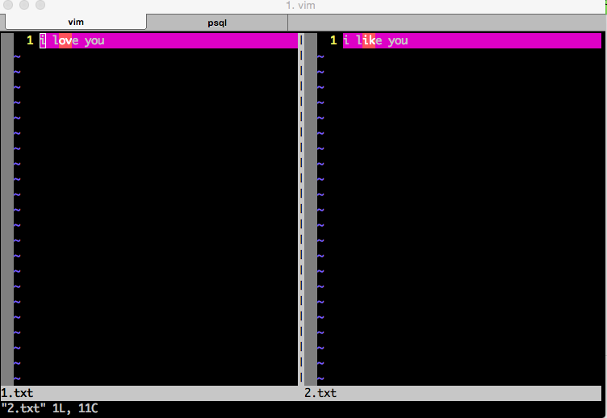
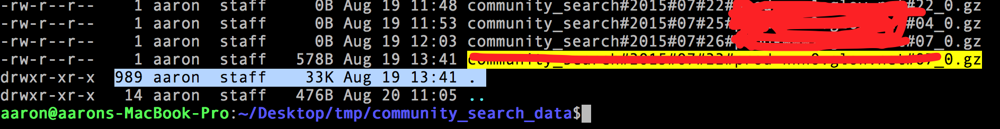

我常用到的linux命令
2015-08-12
无意间发现这本在线书籍挺好的：Linux工具快速教程
##
## 1. ps
Linux中的ps命令是Process Status的缩写。ps命令用来列出系统中当前运行的那些进程。ps命令列出的是当前那些进程的快照，就是执行ps命令的那个时刻的那些进程，如果想要动态的显示进程信息，就可以使用top命令。
要对进程进行监测和控制，首先必须要了解当前进程的情况，也就是需要查看当前进程，而 ps 命令就是最基本同时也是非常强大的进程查看命令。使用该命令可以确定有哪些进程正在运行和运行的状态、进程是否结束、进程有没有僵死、哪些进程占用了过多的资源等等。总之大部分信息都是可以通过执行该命令得到的。
kill 命令用于杀死进程。
linux上进程有5种状态:
- 运行(正在运行或在运行队列中等待)
- 中断(休眠中, 受阻, 在等待某个条件的形成或接受到信号)
- 不可中断(收到信号不唤醒和不可运行, 进程必须等待直到有中断发生)
- 僵死(进程已终止, 但进程描述符存在, 直到父进程调用wait4()系统调用后释放)
- 停止(进程收到SIGSTOP, SIGSTP, SIGTIN, SIGTOU信号后停止运行运行)
ps工具标识进程的5种状态码:
- D 不可中断 uninterruptible sleep (usually IO)
- R 运行 runnable (on run queue)
- S 中断 sleeping
- T 停止 traced or stopped
-
Z 僵死 a defunct (”zombie”) process
- 命令格式： ps[参数]
- 命令功能：
用来显示当前进程的状态 -
命令参数：
a 显示所有进程 -a 显示同一终端下的所有程序 -A 显示所有进程 c 显示进程的真实名称 -N 反向选择 -e 等于“-A” e 显示环境变量 f 显示程序间的关系 -H 显示树状结构 r 显示当前终端的进程 T 显示当前终端的所有程序 u 指定用户的所有进程 -au 显示较详细的资讯 -aux 显示所有包含其他使用者的行程 -C<命令> 列出指定命令的状况 --lines<行数> 每页显示的行数 --width<字符数> 每页显示的字符数 --help 显示帮助信息 --version 显示版本显示
2. kill
Linux中的kill命令用来终止指定的进程（terminate a process）的运行，是Linux下进程管理的常用命令。通常，终止一个前台进程可以使用Ctrl+C键，但是，对于一个后台进程就须用kill命令来终止，我们就需要先使用ps/pidof/pstree/top等工具获取进程PID，然后使用kill命令来杀掉该进程。kill命令是通过向进程发送指定的信号来结束相应进程的。在默认情况下，采用编号为15的TERM信号。TERM信号将终止所有不能捕获该信号的进程。对于那些可以捕获该信号的进程就要用编号为9的kill信号，强行“杀掉”该进程。
- 命令格式：
kill[参数][进程号]
- 命令功能：
发送指定的信号到相应进程。不指定型号将发送SIGTERM（15）终止指定进程。如果任无法终止该程序可用“-KILL” 参数，其发送的信号为SIGKILL(9)，将强制结束进程，使用ps命令或者jobs 命令可以查看进程号。root用户将影响用户的进程，非root用户只能影响自己的进程。
- 命令参数：
-l 信号，若果不加信号的编号参数，则使用“-l”参数会列出全部的信号名称
-a 当处理当前进程时，不限制命令名和进程号的对应关系
-p 指定kill 命令只打印相关进程的进程号，而不发送任何信号
-s 指定发送信号
-u 指定用户
注意：
- kill命令可以带信号号码选项，也可以不带。如果没有信号号码，kill命令就会发出终止信号(15)，这个信号可以被进程捕获，使得进程在退出之前可以清理并释放资源。也可以用kill向进程发送特定的信号。例如： kill -2 123 它的效果等同于在前台运行PID为123的进程时按下Ctrl+C键。但是，普通用户只能使用不带signal参数的kill命令或最多使用-9信号。
- kill可以带有进程ID号作为参数。当用kill向这些进程发送信号时，必须是这些进程的主人。如果试图撤销一个没有权限撤销的进程或撤销一个不存在的进程，就会得到一个错误信息。
- 可以向多个进程发信号或终止它们。
- 当kill成功地发送了信号后，shell会在屏幕上显示出进程的终止信息。有时这个信息不会马上显示，只有当按下Enter键使shell的命令提示符再次出现时，才会显示出来。
- 应注意，信号使进程强行终止，这常会带来一些副作用，如数据丢失或者终端无法恢复到正常状态。发送信号时必须小心，只有在万不得已时，才用kill信号(9)，因为进程不能首先捕获它。要撤销所有的后台作业，可以输入kill 0。因为有些在后台运行的命令会启动多个进程，跟踪并找到所有要杀掉的进程的PID是件很麻烦的事。这时，使用kill 0来终止所有由当前shell启动的进程，是个有效的方法。
说明：
init是Linux系统操作中不可缺少的程序之一。所谓的init进程，它是一个由内核启动的用户级进程。内核自行启动（已经被载入内存，开始运行，并已初始化所有的设备驱动程序和数据结构等）之后，就通过启动一个用户级程序init的方式，完成引导进程。所以,init始终是第一个进程（其进程编号始终为1）。 其它所有进程都是init进程的子孙。init进程是不可杀的！
3. netstat
Netstat 命令用于显示各种网络相关信息，如网络连接，路由表，接口状态 (Interface Statistics)，masquerade 连接，多播成员 (Multicast Memberships) 等等。
执行netstat后，其输出结果为:
Active Internet connections (w/o servers)
Proto Recv-Q Send-Q Local Address Foreign Address State
tcp 0 2 210.34.6.89:telnet 210.34.6.96:2873 ESTABLISHED
tcp 296 0 210.34.6.89:1165 210.34.6.84:netbios-ssn ESTABLISHED
tcp 0 0 localhost.localdom:9001 localhost.localdom:1162 ESTABLISHED
tcp 0 0 localhost.localdom:1162 localhost.localdom:9001 ESTABLISHED
tcp 0 80 210.34.6.89:1161 210.34.6.10:netbios-ssn CLOSE
Active UNIX domain sockets (w/o servers)
Proto RefCnt Flags Type State I-Node Path
unix 1 [ ] STREAM CONNECTED 16178 @000000dd
unix 1 [ ] STREAM CONNECTED 16176 @000000dc
unix 9 [ ] DGRAM 5292 /dev/log
unix 1 [ ] STREAM CONNECTED 16182 @000000df
从整体上看，netstat的输出结果可以分为两个部分：
一个是Active Internet connections，称为有源TCP连接，其中”Recv-Q”和”Send-Q”指%0A的是接收队列和发送队列。这些数字一般都应该是0。如果不是则表示软件包正在队列中堆积。这种情况只能在非常少的情况见到。
另一个是Active UNIX domain sockets，称为有源Unix域套接口(和网络套接字一样，但是只能用于本机通信，性能可以提高一倍)。 Proto显示连接使用的协议,RefCnt表示连接到本套接口上的进程号,Types显示套接口的类型,State显示套接口当前的状态,Path表示连接到套接口的其它进程使用的路径名。
-
常见参数
-a (all)显示所有选项，默认不显示LISTEN相关 -t (tcp)仅显示tcp相关选项 -u (udp)仅显示udp相关选项 -n 拒绝显示别名，能显示数字的全部转化成数字。 -l 仅列出有在 Listen (监听) 的服務状态
-p 显示建立相关链接的程序名 -r 显示路由信息，路由表 -e 显示扩展信息，例如uid等 -s 按各个协议进行统计 -c 每隔一个固定时间，执行该netstat命令。
提示：LISTEN和LISTENING的状态只有用-a或者-l才能看到
备注：
这篇 blog 说netstat命令似乎已经不再维护了，后续将被ip和ss命令取代。

6. vimdiff
linux/mac 下对比多个不同文件，多个不同文件以vim方式打开，可编辑保存，不同的地方会有高亮显示。非常实用，我常用来查看不同的配置文件区别。

有几种方法可以使用vimdiff：
－ vimdiff file1 file2 － vim -d file1 file2 － vim file1 之后打开vim后输入:vertical diffsplit file2
下面是vimdiff中的一些常用快捷键：
- Ctrl-w H（把当前窗口移到最左边）
- Ctrl-w L（把当前窗口移到最右边）
- ]c，跳到下一个差异点
- [c，跳到上一个差异点
- qa，同时退出
- wa，同时保存
- wqa，同时保存并退出 － qa，同时退出不保存
7. head
head 可以用来查看一个文件的前几行，我通常用来查看一个文件的结构。算是最简单的一个命令了，但是很实用啊，当然如果配合其他命令使用起来就更舒服了，比如配合管道做 grep，或者配合管道用 column 来格式化显示csv格式的文件。

8. grep
这个命令就不用说了，因为用得太多了。常用来在很多数据里找到匹配某一模式［可以是正则哦，很强大］的字段，我更常用的场景是配合 “tail －f” 来在实时更新的日志里查找一些相关的字段，比如查找某一个请求api，在debug的时候比较常用。
默认的grep是没有高亮匹配字段的，可以在grep 后加上 “–color”来高亮匹配的字段，更方便的做法是 alias grep="grep --color=auto，这样每次用grep的时候都有高亮了，用起来更方便。
常用的几个参数：
-a 以文本文件方式搜索
-c 计算找到的符合行的次数
-i 忽略大小写
-n 顺便输出行号
-v 反向选择，即找 没有搜索字符串的行
9. du
以前一直没有用过这么命令，因为都用 ls 加上一些参数来查看文件大小。但有一次，我从 AWS S3 上下载了将近1000个文件下来，想查看这一千个文件的总大小，用 `ls -lh’ 发现只能查看每个文件的大小，而显示的文件夹大小并不是文件夹下所有文件的大小，而且这个文件夹的一些元信息的大小：

所以查了半天，才找到 du 这个命令，用起来方便多了。
关于 ls 和 du 这两个命令，我觉得下面这几个帖子值得一看：
10. tail
tail命令和head相反，查看文件的最后几行。不过最常用的还是加上 “-f” 参数后和grep一起使用。
11. scp
scp是secure copy的简写，用于在Linux下进行远程拷贝文件的命令，和它类似的命令有cp，不过cp只是在本机进行拷贝不能跨服务器，而且scp传输是加密的。可能会稍微影响一下速度。当你服务器硬盘变为只读 read only system时，用scp可以帮你把文件移出来。另外，scp还非常不占资源，不会提高多少系统负荷，在这一点上，rsync就远远不及它了。虽然 rsync比scp会快一点，但当小文件众多的情况下，rsync会导致硬盘I/O非常高，而scp基本不影响系统正常使用。
以前在windows下开发的时候，和服务器上的文件上传下载都是通过 securcrt 的sz 和 rz命令，现在用 MAC 了，才知道原来还有这样一个好用的命令，真是弱爆了呀。已经有一篇文章讲这个命令很详细了，我就简单copy一下，把自己常用的参数含义纪录下来。
scp [参数] [原路径] [目标路径]
-B 使用批处理模式（传输过程中不询问传输口令或短语）
-C 允许压缩。（将-C标志传递给ssh，从而打开压缩功能）
-p 保留原文件的修改时间，访问时间和访问权限。
-q 不显示传输进度条。
-r 递归复制整个目录。
-v 详细方式显示输出。scp和ssh(1)会显示出整个过程的调试信息。这些信息用于调试连接，验证和配置问题。
-F ssh_config 指定一个替代的ssh配置文件，此参数直接传递给ssh。
-i identity_file 从指定文件中读取传输时使用的密钥文件，此参数直接传递给ssh。
-l limit 限定用户所能使用的带宽，以Kbit/s为单位。
-P port 注意是大写的P, port是指定数据传输用到的端口号
12. wc
wc – word, line, character, and byte count
13. mkdir
14. tar
扫一扫